1020E16 oil seal cover on left hand counter-rotating shaft - r r engine at bench
- Path
- Procedures > 10 ENGINE > 1020 CRANKCASE SUMP AND COVERS > 1020E oil seals on counter-rotating shafts > 1020E16 oil seal cover on left hand counter-rotating shaft - r r engine at bench
- Kind
- repair procedure (removal / refitting; the operation number is the code)
- Applies to
- all engines; production: da 10/03
- Interactive page
- https://sloeber94.github.io/elrnDB-a156/en/#/3239089
Applies to: all engines; production: da 10/03
 Removing
Removing
 Refitting
Refitting1. Undo the bolt (1a) and the nut (1b) and remove the single drive belt guard (1c).
2. Adjust the automatic belt tensioner with a wrench to slacken the tension of the single drive belt.
3. Remove the single drive belt.
4. Undo the bolt (4a) and remove the fixed single drive belt tensioner (4b).
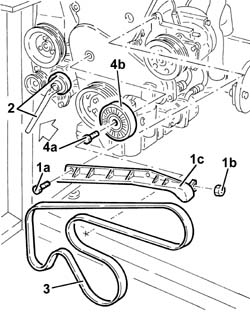
Applies to: all engines; production: da 10/03
1. Undo the bolts (1a) and remove the upper timing belt guard (1b).
2. Undo the bolts (2a) and remove the single drive belt drive pulley (2b).
3. Undo the bolts (3a) and remove the lower timing belt guard (3b).
4. Slacken the counter-balance shafts belt tensioner nut and remove the counter-balance shafts drive belt.
5. Loosen the timing belt tensioner nut.
6. Remove the timing belt.
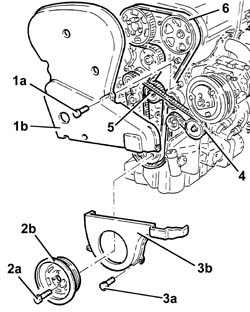
Applies to: all engines; production: da 10/03
1. Undo the bolt (1a) and remove the fixed timing belt tensioner (1b).
2. Undo the bolt (2a) on the left counter-rotating shaft pulley, using the tool (2b) for counter-torque.
 | Name | Country |
|---|---|---|
2b | Counter-torque | 1.820.286.000 |
3. Remove the left counter-rotating shaft pulley.
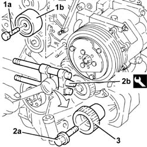
Applies to: all engines; production: da 10/03
1. Undo the bolts (1a) and remove the oil cover from the left counter-rotating shaft (1b) complete with oil seal (1c), O-ring and counter-rotating shafts belt tensioner (1d).
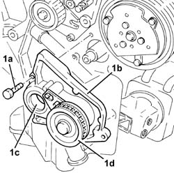
Applies to: all engines; production: da 10/03
Remove the oil seal and O-ring from the cover.
Undo the nut and remove the counter-rotating shafts belt tensioner from the cover.
Applies to: all engines; production: da 10/03
Refitting
Removing1. Fit a new oil seal (1a) on the cover with the tools (1b).
| Name | Country |
|---|---|---|
1b | Fitting tool | 1.821.247.000 |
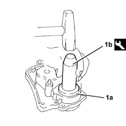
Applies to: all engines; production: da 10/03
Fit a new O-ring on the oil cover.
Fit the counter-rotating shafts belt tensioner and fix it using the nut without tightening it.
Fit the oil cover on the left counter-rotating shaft complete with oil seal, O-ring and counter-rotating shafts belt tensioner, and tighten the bolts to torque.
 | Fastening | Component | Ø | Value (daNm) |
|---|---|---|---|---|
- | Bolt | COUNTER ROTATING SHAFT FRONT COVER | M6 | 0.6 - 0.7 |
Fit the left counter-rotating shaft pulley and fix it using the bolt, using the tool for counter-torque.
| Name | Country |
|---|---|---|
- | Counter-torque | 1.820.286.000 |
Fit the timing belt fixed tensioner and fix it using the bolt.
1. Disconnect the electrical connections from the ignition coils.
 | Name | Connector |
|---|---|---|
1 | Ignition coil |
2. Disconnect the earth lead from the cylinder head.
3. Disconnect the high-tension leads (3a) from the spark plugs using the tool (3b).
| Name | Country |
|---|---|---|
3b | Pliers | 1.820.636.000 |
4. Disconnect the oil vapour recovery pipe from the rocker cover.
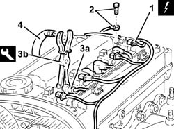
Applies to: all engines; production: da 10/03
1. Slacken the bolt (1a) on the exhaust side camshaft pulley, using the tools (1b) for counter-torque.
| Name | Country |
|---|---|---|
1b | Counter-torque | 1.822.146.000 |
| Name | Country |
|---|---|---|
1b | Counter-torque | 1.822.156.000 |
2. Slacken the bolts (2a) on the inlet side camshaft pulley, using the tool (2b) for counter-torque.
| Name | Country |
|---|---|---|
2b | Counter-torque | 1.822.155.000 |
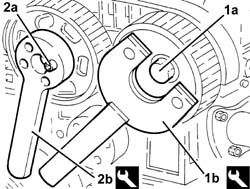
Applies to: all engines; production: da 10/03
Undo the bolts and remove the bracket complete with ignition coils and high-tension leads.
Undo the bolts and remove the rocker cover complete with gasket.
1. Fit the tool (1a), complete with dial gauge (1b), in the housing in the spark plug for the 1st cylinder.
| Name | Country |
|---|---|---|
1a | Extension | 1.825.013.000 |
Rotate the crankshaft until the piston for cylinder no. 1 is at T.D.C. at the power stroke.
Undo the bolts an remove the third caps from the inlet and exhaust camshafts.
2. Fit the tool (2a) in place of the removed camshaft caps, and tighten the bolts (2b) to torque.
| Name | Country |
|---|---|---|
2a | Gauge | 1.825.041.000 |
| Fastening | Component | Ø | Value (daNm) |
|---|---|---|---|---|
2b | Bolt | Templates for engine tuning | M7 | 1.0 |
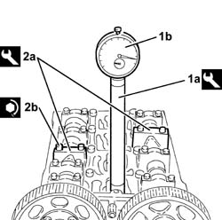
Applies to: all engines; production: da 10/03
Fit the timing belt.
1. Apply maximum tension to the timing belt using the tool.
| Name | Country |
|---|---|---|
1 | Key | 1.822.149.000 |
2. Tighten the timing belt tensioner nut to torque.
| Fastening | Component | Ø | Value (daNm) |
|---|---|---|---|---|
2 | Nut | MOBILE TIMING TENSIONER | M8 | 2.1 - 2.6 |
3. Tighten the bolts (3a) of the inlet side camshaft pulley, using the tool (3b) for counter-torque.
| Name | Country |
|---|---|---|
3b | Counter-torque | 1.822.155.000 |
4. Tighten to torque the bolt (4a) on the exhaust side camshaft pulley, using the tools (4b) for counter-torque.
| Fastening | Component | Ø | Value (daNm) |
|---|---|---|---|---|
4a | Bolt | TIMING GEAR DRIVEN PULLEYS | M12 | 10.0 - 12.4 |
| Name | Country |
|---|---|---|
4b | Counter-torque | 1.822.146.000 |
| Name | Country |
|---|---|---|
4b | Counter-torque | 1.822.156.000 |
Undo the bolts and remove the tool.
| Name | Country |
|---|---|---|
- | Gauge | 1.825.041.000 |
Fit the camshaft caps removed previously and tighten the bolts to torque.
| Fastening | Component | Ø | Value (daNm) |
|---|---|---|---|---|
- | Bolt | Camshaft caps | M7 | 1.3 - 1.6 |
Rotate the crankshaft through two revolutions.
Slacken the timing belt tensioner nut.
5. Line up the moving reference (5a) on the timing belt tensioner with the reference hole (5b) using the tool (5c).
| Name | Country |
|---|---|---|
5c | Key | 1.822.149.000 |
Tighten the timing belt tensioner nut to the specified torque.
| Fastening | Component | Ø | Value (daNm) |
|---|---|---|---|---|
- | Nut | MOBILE TIMING TENSIONER | M8 | 2.1 - 2.6 |
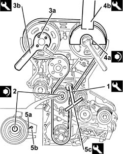
Applies to: all engines; production: da 10/03
Rotate the crankshaft until the piston of cylinder no. 1 is at T.D.C.
1. Position the counter-balance shafts so that the references on the pullies line up with those on the front covers.
2. Fit the counter-balance shafts drive belt.
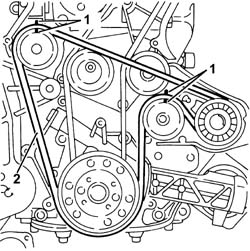
Applies to: all engines; production: da 10/03
1. Tension the counter-balance shafts drive belt using the tool (1a) so that the reference hole (1b) on the belt tensioner is at the centre of the rotation sector.
| Name | Country |
|---|---|---|
1a | Key | 1.822.154.000 |
2. Tighten the counter-balance shafts belt tensioner nut.
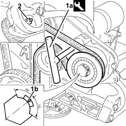
Applies to: all engines; production: da 10/03
Remove the tool complete with dial gauge.
| Name | Country |
|---|---|---|
- | Extension | 1.825.013.000 |
Fit the spark plug for cylinder no. 1.
Fit the rocker cover complete with gasket and fix it using the bolts.
Connect the oil vapour recovery pipe to the rocker cover.
Fit the bracket complete with ignition coils and high-tension cables and fix it using the bolts
Connect the high-tension leads to the spark plugs.
Connect the earth lead to the cylinder head.
Connect the electrical connections to the ignition coils.
| Name | Connector |
|---|---|---|
- | Ignition coil |
Fit the lower timing belt guard and fix it using the bolts.
Fit the upper timing belt guard and fix it using the bolts.
Fit the single drive belt pulley and tighten the bolts to torque.
| Fastening | Component | Ø | Value (daNm) |
|---|---|---|---|---|
- | Bolt | CRANKSHAFT PULLEY | M8 | 2.4 - 2.9 |
Fit the fixed single drive belt tensioner and fix it with its bolt.
Fit the auxiliary components drive belt, using a spanner to lever on the automatic belt tensioner.
Fit the single drive belt guard and fix it using the nut and bolt.